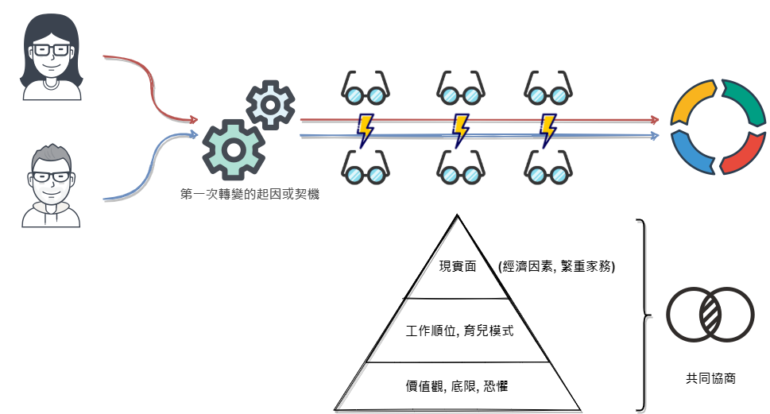

雙薪家庭進化論-整理與心得
整理第一章到第四章, 第一章描述本書主要結構和組成, 伴侶所要經歷的三次轉變, 第二章到第四章說明第一次轉變的本質, 契機, 困境與掙扎期, 工具(共同協商, 對付繁重家務的策略)
在這篇整理與心得當中我會以伴侶或旅伴來代稱夫妻這個概念
三次轉變
雙薪伴侶從開始交往到退休, 會經歷三次轉變, 每一次轉變都使他們面臨新的問題, 帶來不同的憂慮以及嶄新的相處模式, 同時也必須面對某些心理與社會力量(形塑他們之間的關係), 並重新檢視前幾次轉變期間所形成的共識, 而所有轉變都會經歷一段掙扎期
整理過程當中發現, 月薪嬌妻特別篇根本就是在講第一次轉變會遇到的大多數問題阿XD

匯流-從獨立到合併
你還是獨立看待自己的工作, 人生以及應負的責任嗎?
多數伴侶之所以在第一次轉變期間苦苦掙扎, 極度焦慮, 有一個最主要的原因, 即便成為伴侶, 他們還是獨立看待自己的工作, 人生以及應負的責任
第一次轉變的起因, 來自於工作或個人生活中的大事, 例如:
- 搬到其他地方居住
- 被升職或解雇
- 獲得重要工作機會
- 孩子剛出生
- 罹患嚴重疾病
- 必須照顧年邁的父母親
- 家人的健康問題
面臨的第一件大事具有特殊意義, 因為要因應這件事, 他們無法再保有各自獨立的生涯與職涯, 必須將其合而為一
如同版本控制工具git當中的合併功能(merge), 在獨立到相互依賴的過程當中很大機會會遇到衝突(conflict), 在這過程當中, 必須經由溝通與充分理解彼此的想法後達成共識, 作者介紹了一個她與其伴侶使用並整理出的系統化工具-共同協商(couple contracting)
共同協商(couple contracting)
作者提到和伴侶交往四周時發生的故事, 他們回到了其中一人的故鄉, 在西西里的某個小漁村, 他們坐在岸邊, 討論天南地北, 無話不談, 從對這段關係的想法, 對未來的恐懼到想要從彼此身上獲得甚麼
能夠成就彼此的旅伴會慎重地做出決定, 他們彼此坦誠, 相互溝通, 而不是其中一方含蓄地給予暗示, 可以用內容面和執行面來看
在內容面, 深入溝通三個層面: 價值觀(方向), 底限(界線)與恐懼(潛在風險)
協商並找出彼此在這三個部分的共同點, 可以事先建構出一套雙方都認可的標準, 有助於做出困難的決定
充分理解另一半的立場, 找出彼此的共同點很重要, 但也不需要針對每一件事都取得共識
期待兩人的價值觀, 底限與恐懼永遠不會改變是不切實際的, 所以每年或每次面臨重大轉變時都重新檢視它們才是明智的做法
儘量對齊, 減少讓對方猜測, 不需要針對每一件事, 定時檢視
執行面上, 提到摧毀關係的末日四騎士: 輕蔑, 批評, 防衛, 漠視, 其中最嚴重的是輕蔑, 代表你不尊重你的另一半, 認為自己較為優越, 行為包含了模仿, 嘲弄, 諷刺, 翻白眼和冷笑
可以參考賴佩霞老師關於非暴力溝通的書和陳永儀教授在TEDxTalk上的演講, 當中提到一對從不同面向(理性與感性)看同一件事情的伴侶, 學習認識自己的情緒，並適當地表達
全世界, 無論哪個種族, 哪種文化, 都有兩種不同的人, 一種人很在乎誰對誰錯(who is right and who is wrong), 在人際相處上, 這種人常因生活中的不如意而耿耿於懷, 容易有攻擊傾向, 另一種人則不那麼重視對與錯, 他們追求的是更美好的人生, 關心的是該做什麼, 說什麼, 能讓自己的人生更美好(how can I make life more wonderful)
冰山表層-僅從現實層面找答案所面臨的挑戰
困境一: 以經濟條件作為決策標準
以經濟因素為首要考量, 兩個人的價值觀則居於次要
困境二: 短期偏差
只考慮到短期好處(享有和孩子相處的寶貴時光, 有更多精力處理家裡的各種瑣事), 忽略掉長期影響
困境三: 只著重現實層面
忽略掉感受面, 也就是這些決定背後隱藏的情緒, 價值觀和恐懼
困境四: 做完每一件事
掙扎期的痛苦教會夫妻不能僅從現實層面找答案, 必須進行更深層的溝通, 將兩人的價值觀, 信念和感受納入考量, 當夫妻針對這些層面進行討論時, 就能更從容地面對生活大小事
總體來說, 現實面(經濟因素, 繁重家務), 價值觀和長期影響(方向, 自我認同)都需要考量, 而這時共同協商所得到的底線就會發揮效果, 雖然感覺很累但有其必要性
有一些延伸的議題是若現實面來得又快又急, 可能會來不及溝通的話怎麼辦, 例如: 明後天就是截止日期或者是現實面大到無法承受怎麼辦, 例如: 失去收入和健康
對付繁重家務的策略
家務就是一連串必須完成的任務, 例如: 管理財務, 修剪草坪, 安排社交生活…等
家務令人厭惡, 那像是一種犧牲奉獻, 沉重且乏味, 不過換個角度看, 或許也能從中體會到生活的樂趣與意義
妥善分配家務不一定是指平均分攤, 而是伴侶間謹慎地分配工作, 對分工方式感到滿意, 不僅對彼此沒有不滿的情緒, 也能推動自己的職涯向前邁進
- 列出所有的家務工作
- 雙方會出現認知落差, 主因是我們不清楚自己的伴侶做了些甚麼, 反之亦然
- 我們往往會對自己沒有做的家務視而不見, 這使兩人心生不滿, 覺得自己不被重視, 一起列出完整的家務清單, 可以避免這種認識不足的困境
- 可以不做那些事
- 拼命想做完每一件事, 有可能是因為你們覺得自己該做, 而不是你們真的需要或想做
- 可能是為了迎合他人的期望
- 模仿父母親或朋友的行為
- 拼命想做完每一件事, 有可能是因為你們覺得自己該做, 而不是你們真的需要或想做
- 我想負責甚麼工作
- 我們可以外包哪些事情
- 當你們特別忙碌或壓力特別大時, 例如: 在工作上負責大型專案, 為即將到來的升遷做準備, 孩子剛出生, 重新檢視這些關於家務外包的共識, 在必要時多請別人幫忙可以讓你們免於筋疲力竭
- 我們要如何分攤其餘工作
- 策略一: 各自負責分配到的部分
- 策略二: 輪流
- 關鍵在於明確, 兩人的關係之所以變得緊張, 幾乎都是因為分工不明確而不是不平均
來看看平匡和美栗的狀況吧XD
冰山深層-工作順位與育兒模式
當兩人共同的責任逐漸出現, 另一半也開始對他們的生活提出要求時, 問題就產生了, 伴侶間從各自獨立的角度看待所面臨的新挑戰, 最終形成不是你贏就是我輸的零和遊戲
工作順位
無論是哪一種, 重點在於明確地談論並針對如何排定彼此的工作順位達成共識
- 主要/次要模式(primary-secondary model)
- 好處是角色明確, 兩人都分別主導一個部分(工作或家庭), 讓很多決定都變得容易許多
- 風險在於, 一旦採用就很難改變, 人們往往會在自己扮演的角色上投入大量的心力, 因此當生活環境或另一半的偏好改變時, 很難進行角色轉換
- 輪流模式(turn-taking model)
- 和主要/次要模式很類似, 差異在於每隔一段時間夫妻就會互換角色
- 好處是雙方都有機會在工作與家庭投入大量的心力
- 風險在於對互換角色的時間規範不明確, 原因是我們很難預料一個人的職涯將會如何發展
- 雙重主要模式(double-primary model)
- 夫妻同時擔任主要工作者, 很困難且辛苦, 重點在設立明確的底限
- 好處是兩人處於平等的地位, 可以同時在工作和家庭上投入心力
- 特性是夫妻必須坦率地溝通, 盡量不先預設立場, 同時建立關於工作順位的明確共識,
- 坦率地溝通意即根據雙方真正的感受, 需求, 恐懼與渴望, 一起做出決定
- 風險在於建立堅定且明確的底限並確實遵守, 否則會陷入做完每一件事的困境
育兒模式
“主要”的意涵在於主導性, 像平匡說等孩子出生後會全力支持美栗, 這樣就不是主要而是協助的感覺
此外, 也要注意性別期待的壓力和影響, 在月薪嬌妻特別篇都有描繪出來XD
- 主要照顧者模式(lead-parent model)
- 由其中一人擔任主要照顧者的角色
- 這個角色必須對孩子周遭的一切瞭若指掌並且給予他們支援, 例如: 知道哪一天有體育課, 打預防針的時間, 孩子好友父母親的聯絡方式, 班上死黨的名字, 何時有校外教學
- 好處是角色明確, 不只是父母親, 孩子也知道由誰承擔主要養育責任, 因此感到較輕鬆自在
- 特性是在家庭的重要時刻, 次要照顧者可能會覺得自己被排除在外
- 由其中一人擔任主要照顧者的角色
- 輪流模式(turn-taking model
- 每隔一段時間夫妻就會互換角色
- 風險在於對互換角色的時間規範不明確
- 共同照顧模式(co-parenting model)
- 共同分擔中央電腦系統的工作, 例如: 其中一人負責處理所有和體育課, 醫療保健, 家庭作業有關的事; 另一人負責幫孩子安排社交與音樂活動, 以及和老師聯繫
開始匯流並相互依賴
要怎麼談論這件事並做出決定才能讓你們都覺得自己享有自主權, 並且可以開心地實行一段時間呢? 討論彼此的中期職涯與生涯目標(接下來的5年), 是一個很好的開始
- 在你和另一半的關係裡, 那些是最重要的事
- 希望能為那些活動保有時間與金錢, 可能包含了旅行, 運動, 個人嗜好, 對文化或藝術的愛好, 社區活動
- 你有一個以上的職涯目標嗎?
- 為了取得某項專業證照, 完成相關訓練課程
- 成為自由工作者, 並至少擁有三個客戶
- 晉升至管理階層
- 在你的生活中, 還有哪些事對你很重要
- 類似價值觀排序
- 你的企圖心有多大
- 身為父母親, 你比較想扮演什麼角色
當伴侶成功度過第一次轉變的掙扎期時, 會是兩人都可以接受的相互依賴狀態, 表示彼此決定共同努力, 確保兩人都做出選擇, 同時也能有所成就